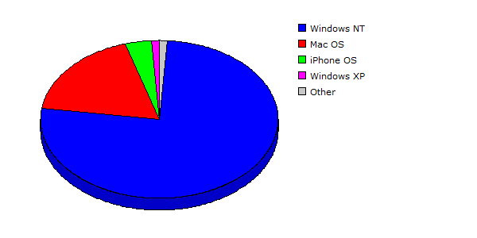

| Rank |
Operating System |
Hits |
Visitors |
| 1 |
Windows NT |
99506 |
79.15% |
6231 |
76.28% |
| 2 |
Mac OS |
23283 |
18.52% |
1467 |
17.96% |
| 3 |
iPhone OS |
767 |
00.61% |
296 |
03.62% |
| 4 |
Windows XP |
1065 |
00.85% |
88 |
01.08% |
| 5 |
Linux |
597 |
00.47% |
54 |
00.66% |
| 6 |
Windows Server 2003 |
323 |
00.26% |
17 |
00.21% |
| 7 |
Windows Vista or Windows Server 2008 |
167 |
00.13% |
13 |
00.16% |
| 8 |
Windows |
3 |
00.00% |
2 |
00.02% |
| 9 |
FreeBSD |
6 |
00.00% |
1 |
00.01% |
| |
Total |
125717 |
8169 |
|
Description: This report contains statistics about the operating systems that your visitors use.
|
|